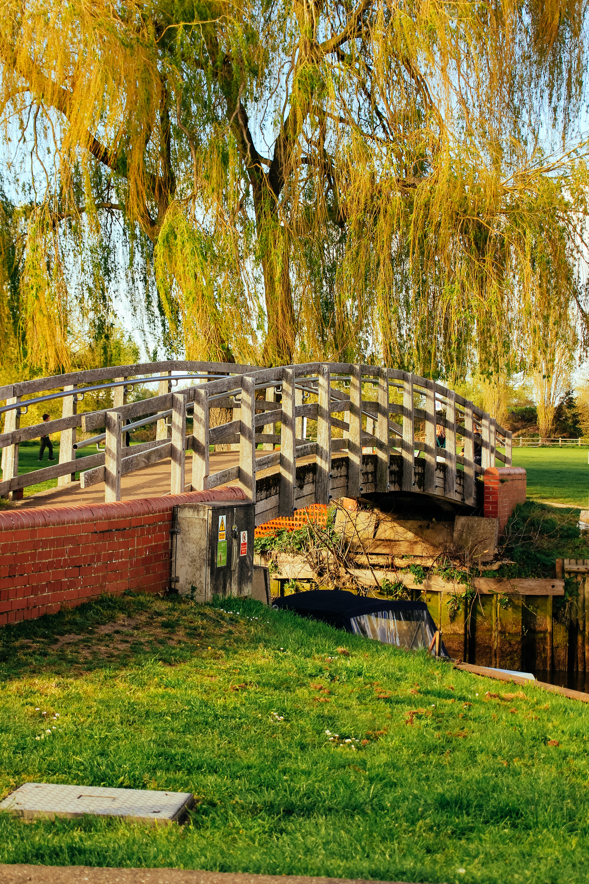
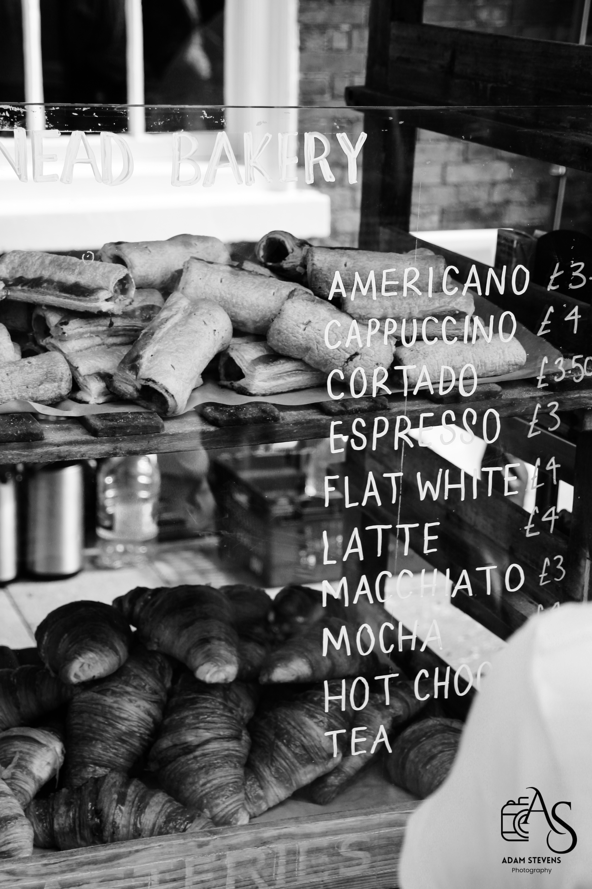
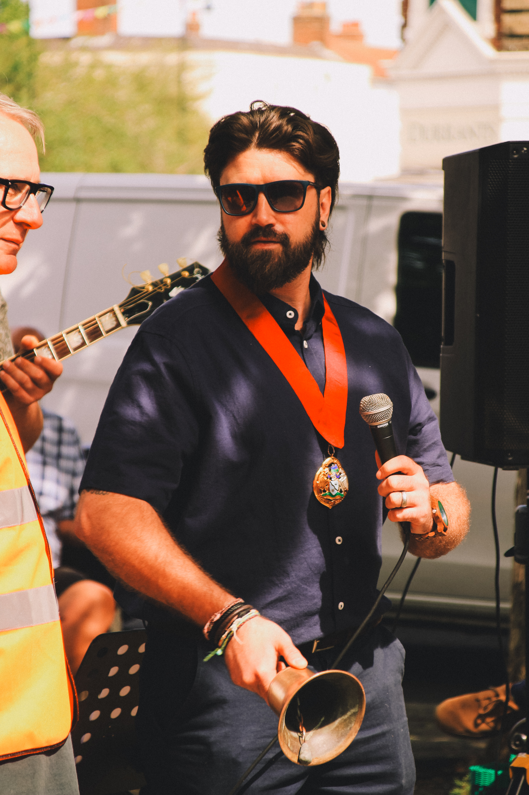
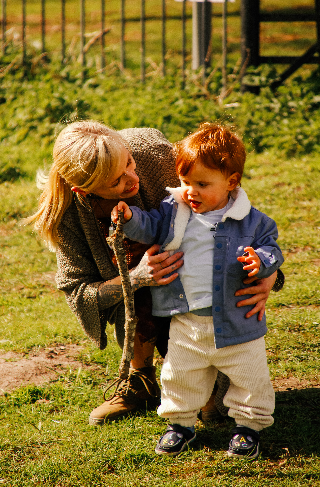
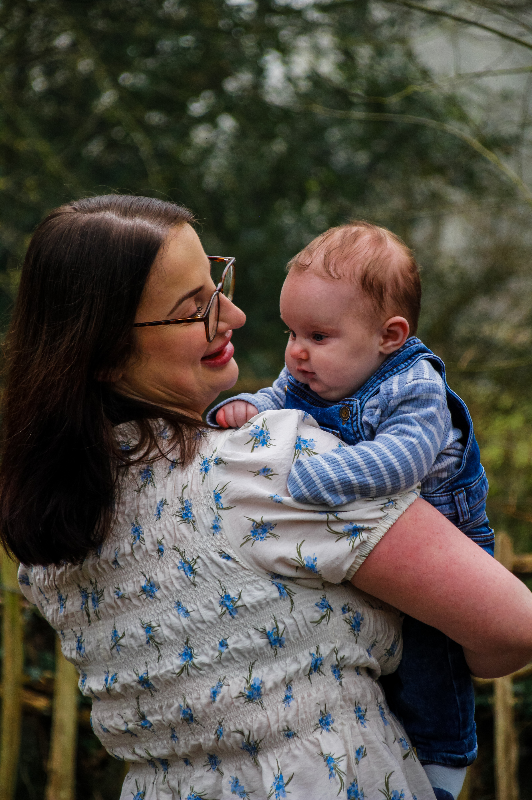

Portraits

Street

Cars

Every photograph tells a story, and my goal is to capture those stories in a creative, authentic and memorable way. Wether its a striking portrait, a cherished family moment, or the beauty of a unique vechile, I strive to create images that people will be proud to share and remember. Explore my portfolio below to see a selection of my favourite work and the moments I've captured along the way.


Hi, I’m Adam Stevens, a Norfolk-based photographer specialising in portraits, street photography, cars, and events. I focus on capturing natural, emotional, and timeless images.
After completing 3 years of photography in collage, life got very busy for me, which included moving from my home town and my family, living not the best life and becoming a father so after many years of putting my talents on a shelf, I finally decided enough was enough, I picked the camera back up got rid of the dust and decided my time to shine was right now.
My photography is all about storytelling — turning real moments into memories that last. I’m always improving my craft and open to new creative opportunities.
Feel free to explore my work above and get in touch below if you’d like to work together.

"I just wanted to say your photos are incredible."

"I love every single picture, I'm going to treasure these forever."

"They are so brilliant, thank you so much."